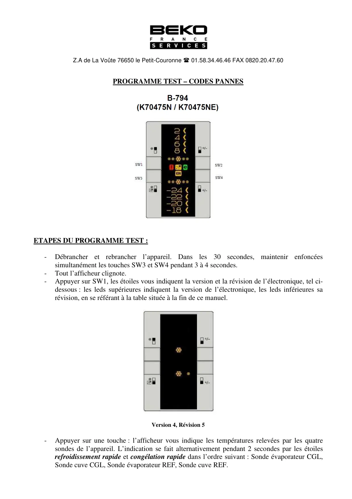
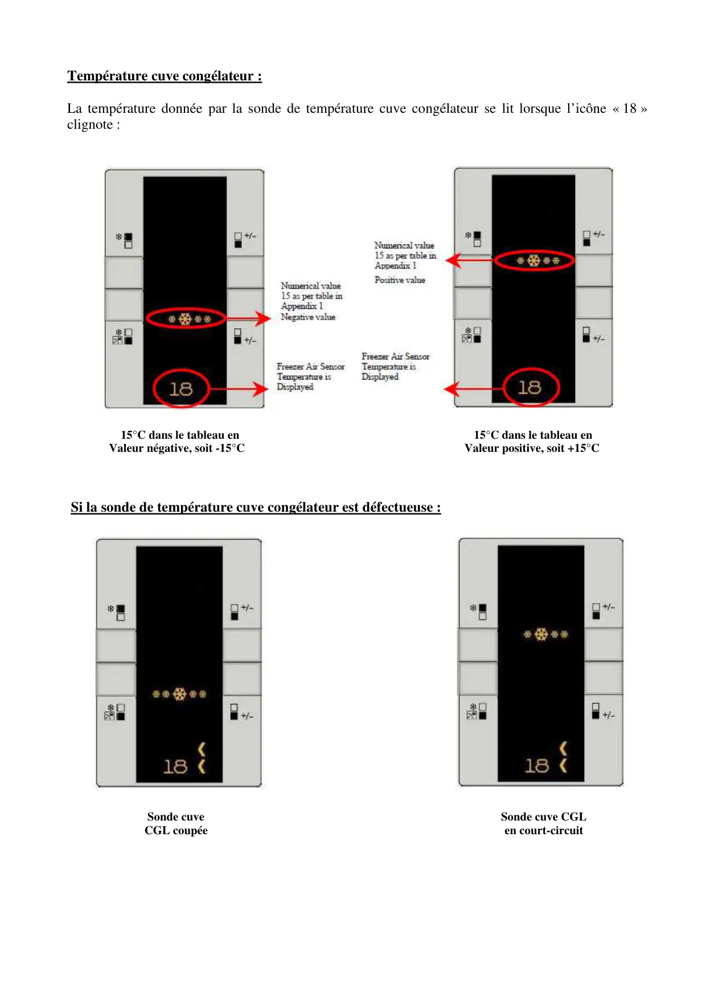
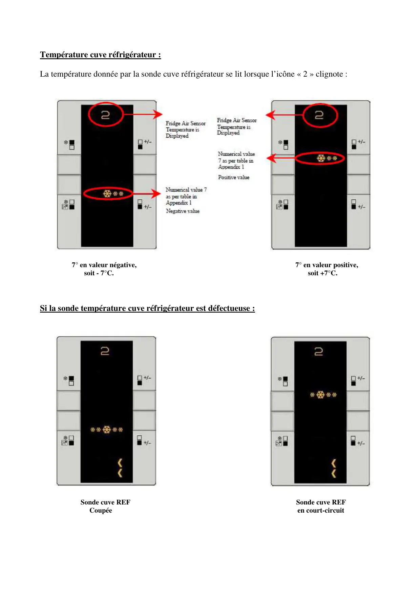
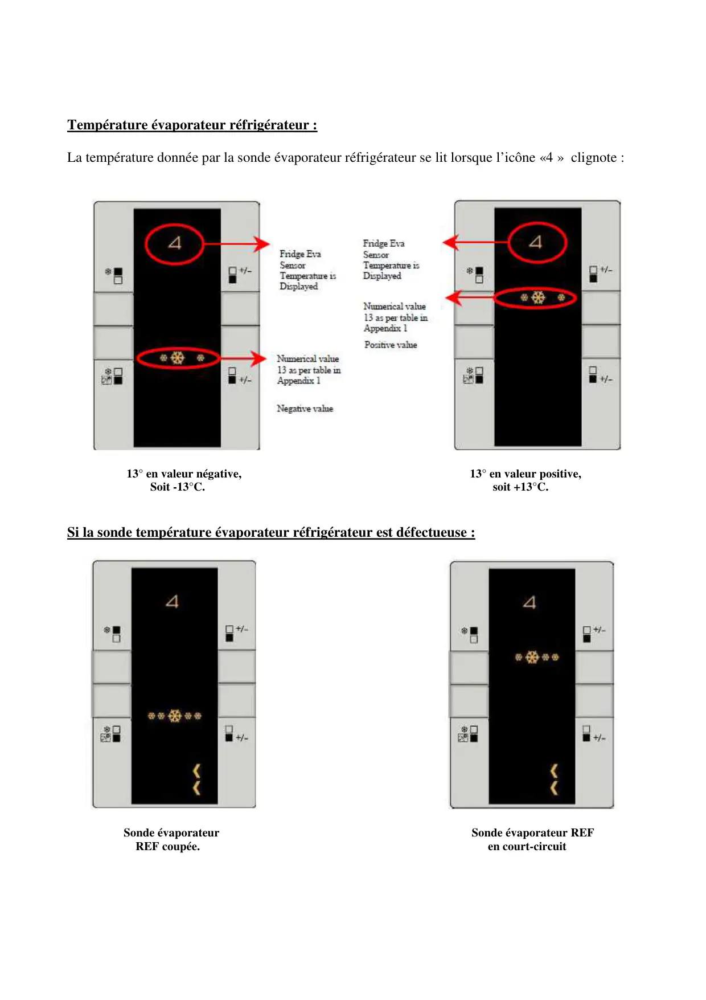
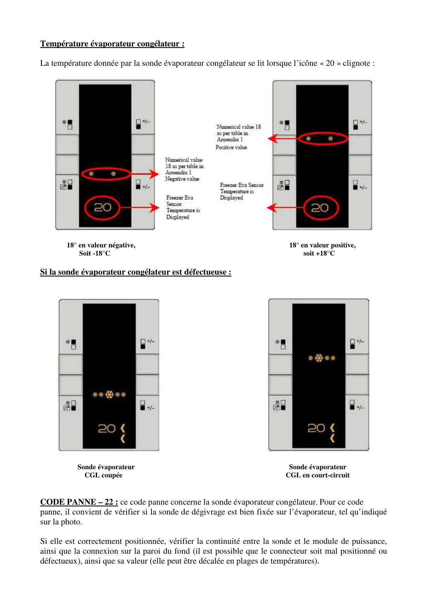
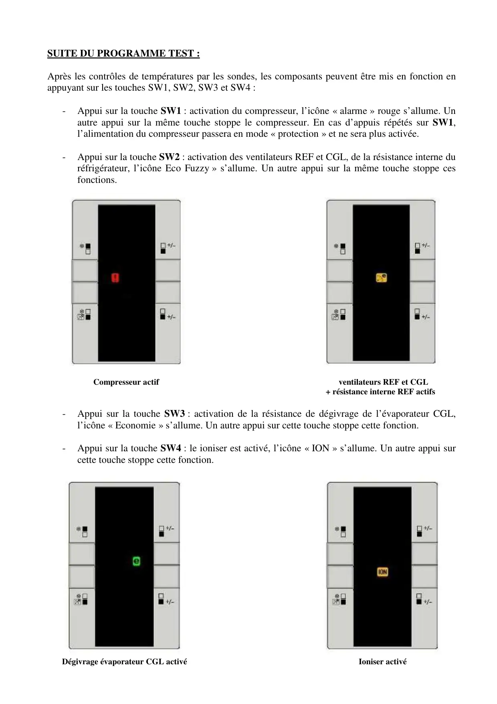
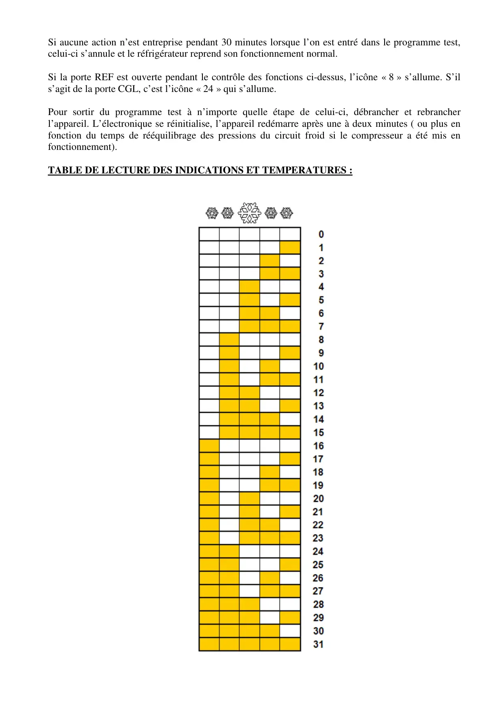

ProgrTest B794 V1 CN142220 Fr

Z.A de La Voûte 76650 le Petit-Couronne 01.58.34.46.46 FAX 0820.20.47.60PROGRAMME TEST – CODES PANNESETAPES DU PROGRAMME TEST :-Débrancher et rebrancher l’appareil. Dans les 30 secondes, maintenir enfoncéessimultanément les touches SW3 et SW4 pendant 3 à 4 secondes.-Tout l’afficheur clignote.-Appuyer sur SW1, les étoiles vous indiquent la version et la révision de l’électronique, tel ci-dessous : les leds supérieures indiquent la version de l’électronique, les leds inférieures sarévision, en se référant à la table située à la fin de ce manuel.Version 4, Révision 5-Appuyer sur une touche : l’afficheur vous indique les températures relevées par les quatresondes de l’appareil. L’indication se fait alternativement pendant 2 secondes par les étoilesrefroidissement rapide et congélation rapide dans l’ordre suivant : Sonde évaporateur CGL,Sonde cuve CGL, Sonde évaporateur REF, Sonde cuve REF.
1 / 7
Température cuve congélateur :La température donnée par la sonde de température cuve congélateur se lit lorsque l’icône « 18 »clignote :15°C dans le tableau en 15°C dans le tableau enValeur négative, soit -15°C Valeur positive, soit +15°CSi la sonde de température cuve congélateur est défectueuse :Sonde cuve Sonde cuve CGLCGL coupée en court-circuit
2 / 7
Température cuve réfrigérateur :La température donnée par la sonde cuve réfrigérateur se lit lorsque l’icône « 2 » clignote :7° en valeur négative, 7° en valeur positive,soit - 7°C. soit +7°C.Si la sonde température cuve réfrigérateur est défectueuse :Sonde cuve REF Sonde cuve REFCoupée en court-circuit
3 / 7
Température évaporateur réfrigérateur :La température donnée par la sonde évaporateur réfrigérateur se lit lorsque l’icône «4 » clignote :13° en valeur négative, 13° en valeur positive,Soit -13°C. soit +13°C.Si la sonde température évaporateur réfrigérateur est défectueuse :Sonde évaporateur Sonde évaporateur REFREF coupée. en court-circuit
4 / 7
Température évaporateur congélateur :La température donnée par la sonde évaporateur congélateur se lit lorsque l’icône « 20 » clignote :18° en valeur négative,18° en valeur positive,Soit -18°C soit +18°CSi la sonde évaporateur congélateur est défectueuse :Sonde évaporateur Sonde évaporateurCGL coupée CGL en court-circuitCODE PANNE – 22 : ce code panne concerne la sonde évaporateur congélateur. Pour ce codepanne, il convient de vérifier si la sonde de dégivrage est bien fixée sur l’évaporateur, tel qu’indiquésur la photo.Si elle est correctement positionnée, vérifier la continuité entre la sonde et le module de puissance,ainsi que la connexion sur la paroi du fond (il est possible que le connecteur soit mal positionné oudéfectueux), ainsi que sa valeur (elle peut être décalée en plages de températures).
5 / 7
SUITE DU PROGRAMME TEST :Après les contrôles de températures par les sondes, les composants peuvent être mis en fonction enappuyant sur les touches SW1, SW2, SW3 et SW4 :-Appui sur la touche SW1 : activation du compresseur, l’icône « alarme » rouge s’allume. Unautre appui sur la même touche stoppe le compresseur. En cas d’appuis répétés sur SW1,l’alimentation du compresseur passera en mode « protection » et ne sera plus activée.-Appui sur la touche SW2 : activation des ventilateurs REF et CGL, de la résistance interne duréfrigérateur, l’icône Eco Fuzzy » s’allume. Un autre appui sur la même touche stoppe cesfonctions.Compresseur actif ventilateurs REF et CGL+ résistance interne REF actifs-Appui sur la touche SW3 : activation de la résistance de dégivrage de l’évaporateur CGL,l’icône « Economie » s’allume. Un autre appui sur cette touche stoppe cette fonction.-Appui sur la touche SW4 : le ioniser est activé, l’icône « ION » s’allume. Un autre appui surcette touche stoppe cette fonction.Dégivrage évaporateur CGL activéIoniser activé
6 / 7
Si aucune action n’est entreprise pendant 30 minutes lorsque l’on est entré dans le programme test,celui-ci s’annule et le réfrigérateur reprend son fonctionnement normal.Si la porte REF est ouverte pendant le contrôle des fonctions ci-dessus, l’icône « 8 » s’allume. S’ils’agit de la porte CGL, c’est l’icône « 24 » qui s’allume.Pour sortir du programme test à n’importe quelle étape de celui-ci, débrancher et rebrancherl’appareil. L’électronique se réinitialise, l’appareil redémarre après une à deux minutes ( ou plus enfonction du temps de rééquilibrage des pressions du circuit froid si le compresseur a été mis enfonctionnement).TABLE DE LECTURE DES INDICATIONS ET TEMPERATURES :
7 / 7